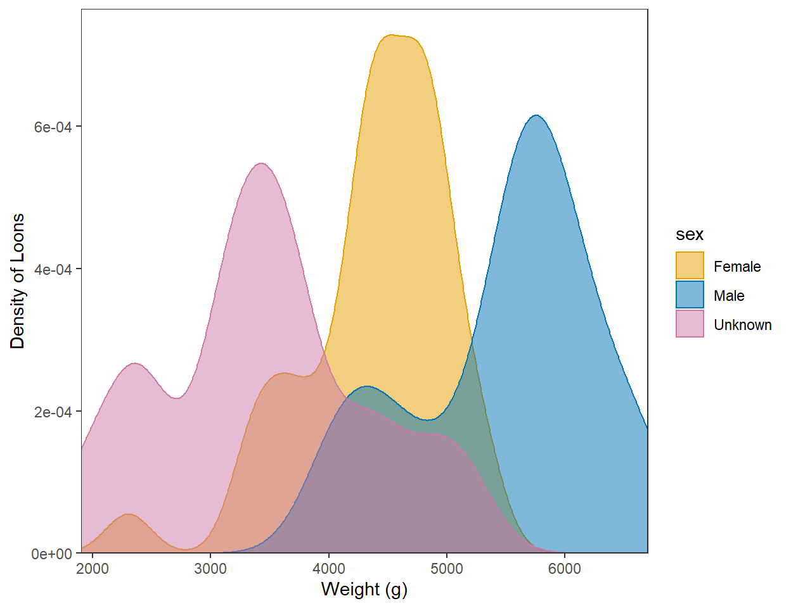

Weight 2
Construct ggplot2 code to match the graph below (as closely as you can). [HINT: Copy your code from above and then modify.]

“Play with” adjust= in geom_density() to feel how this changes the plot. What value do you prefer?
This is the same data set introduced here (which included code for accessing the data). If you did those exercises, then you can use the same data and package (e.g., tidyverse) loading portion of your script. If you did not do those exercises then please see that page for the instructions on loading the data.
Construct ggplot2 code to match the graph below (as closely as you can).
“Play with” binwidth= in geom_histogram() to feel how this changes the plot. What value do you prefer?
Construct ggplot2 code to match the graph below (as closely as you can). [HINT: Copy your code from above and then modify.]
“Play with” adjust= in geom_density() to feel how this changes the plot. What value do you prefer?
Construct ggplot2 code to match the graph below (as closely as you can … you don’t have to match my colors, but do use other than the default colors).

Construct ggplot2 code to match the graph below (as closely as you can).
Construct ggplot2 code to match the graph below (as closely as you can). [HINT: Copy your code from above and then modify.]

Construct ggplot2 code to match the graph below (as closely as you can … you don’t have to match my colors, but do use other than the default colors). [HINT: Copy your code from above and then modify.]

Construct ggplot2 code to match the graph below (as closely as you can). [HINT: Copy your code from above and then modify.]

This plot can also1 be produced from your “Weight 6” plot with the addition of one more line of code. Perform an internet search to see if you can find this method for flipping the coordinates.
Construct ggplot2 code to match the graph below (as closely as you can). Hints: (1) This plot has been “faceted”, which may help your Google search, (2) this can be created from your “Weight 1” plot with one extra function of code (assuming you saved that plot into an object), and (3) change to fig.height=8 in the code chunk header for this plot.
Assuming that you did not do it this easier way the first time.↩︎